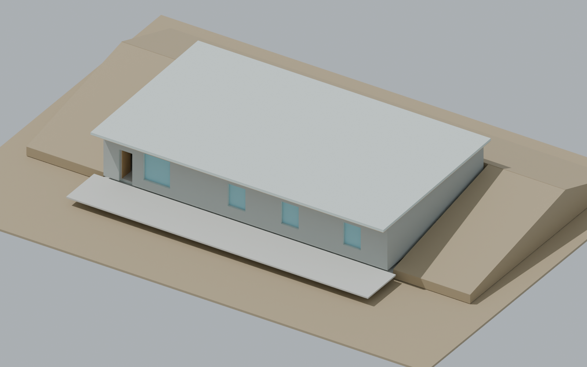
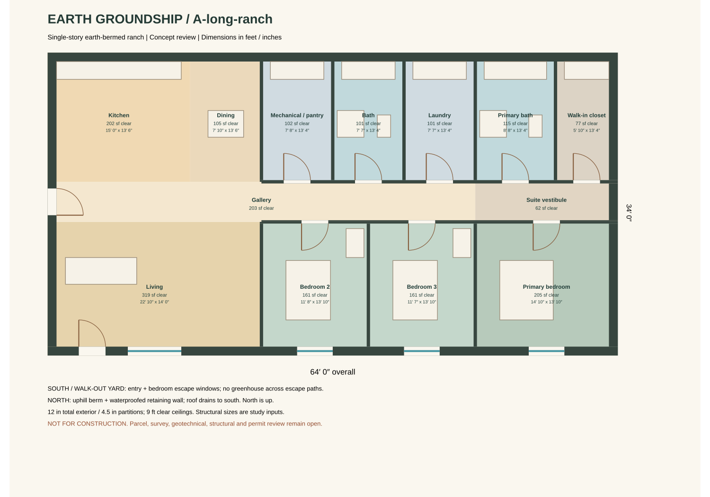
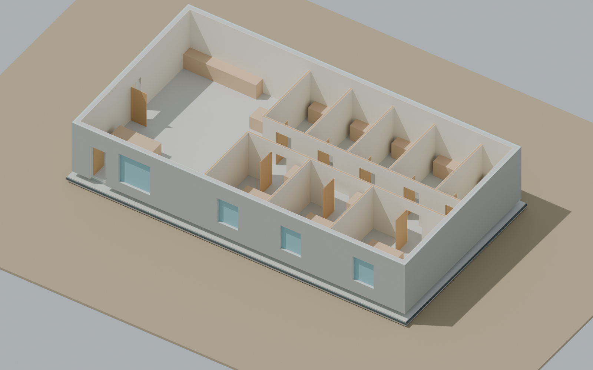
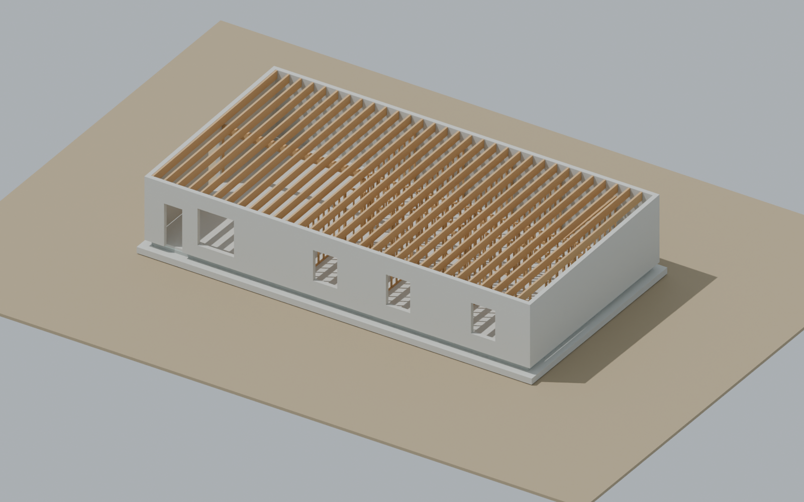
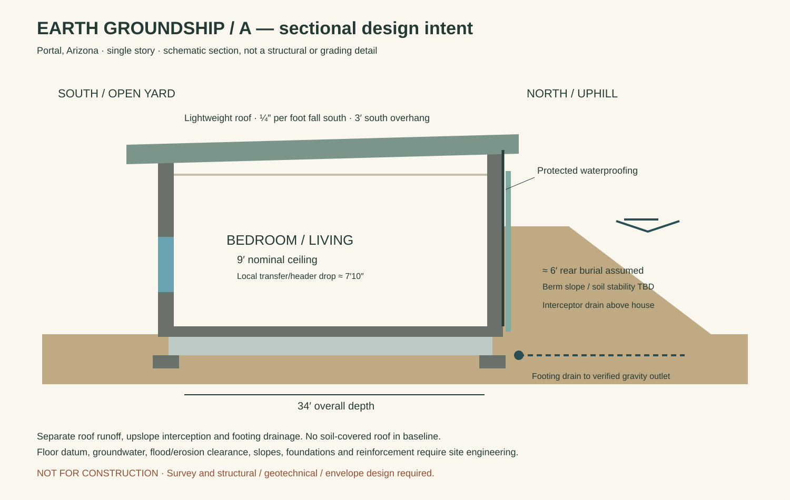

PORTAL, ARIZONA · DRAFT A · 2026-11-02
A ranch home,
set into the earth.
One level. Three bedrooms. A south-facing walk-out yard and a protected, earth-bermed north wall.
Layout A selected · construction design in progress
Draft concept, not for construction. The footprint includes walls; clear floor excludes wall bands and door thresholds. Earth berms, patio and roof overhangs are outside the enclosed area. The baseline has an exposed lightweight roof; soil over the roof is not included.
01 / ROOM-FIRST PLAN
Daylight and escape at the open face.
The living room and all bedrooms face the south yard. The kitchen and dining area join the west living space through an open gallery. Baths, laundry, storage and mechanical space occupy the rear band against the berm. A primary-suite vestibule connects the bedroom, bath and walk-in closet.



A was selected on November 2, 2026. Alternative B remains available for comparison: 58′ × 37′, approximately 2,146 sq ft gross / 1,885 sq ft clear.
02 / CONSTRUCTION STUDY
One source, inspectable assemblies.
The Blender study separates footings, slab, retaining walls, waterproofing, insulation, drainage, interior framing, roof, openings and fixtures. Four saved scenes support exterior, cutaway, plan and structural review. A 14-stage visibility sequence uses the same construction objects as the material takeoff.




Section, burial and drainage intent

Assumes south-falling ground, suitable soils, a low water table and a location outside flood/erosion hazards. Upslope interception, roof runoff and footing drainage are separate systems. Final outlet, berm slopes and retaining-wall loads need the actual parcel.
03 / US MATERIALS & COSTS
Stock sizes you can discuss with a US supplier.
Nominal 2×4 framing is modeled at actual 1½″ × 3½″, with 16″ stud spacing. Schematic partition headers use two dressed 2×6 plies and a ½″ spacer. Purchasing schedules use feet, inches, 4′ × 8′ sheets, full rolls, cubic yards and each.
The overall scenario adds authored allowances for house labor/equipment, site/services, freight, tax, overhead, design fees and 20% contingency. Land and optional off-grid systems are excluded. Supplier prices are advertised benchmarks, not Portal quotes.
Material breakdown by category
Each cost row shows its buying unit, allowance, price basis and supplier link where a source is available. Quantity-derived costs and unquoted allowances remain visible separately. Board-equivalent lumber counts are budgeting aids; they are not a cut list.
04 / EVIDENCE & NEXT DECISIONS
Checked geometry, open engineering.
Checks completed
- Room coverage, shared-wall ownership and semantic SVG readback.
- Full conservative door-swing checks and fixture containment.
- Connected 30″ furnished walking envelope and access at both bed sides and foot.
- 1,131 original model components, closed positive-volume meshes and unit scales.
- Four saved scenes and all 14 reveal stages verified after reopening the native file.
Native validation receipt · Furnished routes · Source rejection checks
Before permit development
- Confirm parcel, survey, flood/erosion status, soil and groundwater.
- Engineer retaining walls, reinforcement, foundations, transfer beam and roof.
- Coordinate 36″ nominal doors with actual prehung rough openings and hardware.
- Complete daylight, ventilation, thermal, waterproofing and utility design.
- Separate mechanical/pantry storage, review suite privacy and obtain local supplier/installer quotes.
Cochise County adopted 2024 residential codes effective September 1, 2026, with 2023 NEC and retained 2012 IECC, subject to local amendments. County adoption notice.
The 30″ walking envelope is a study input, not an accessibility certification. Nominal ceiling datum is 9′; the schematic dropped transfer beam reaches approximately 7′10″ underside locally. No structural, drainage or full code approval is implied.
Read the code and site research05 / PROJECT FILES
Review, download, revise.
Blender modelFour scenes + construction timelineSelected floor planSVG · dimensions in feet / inchesSection / site intentSchematic burial and drainageMaterials and costsSupplier links and complete scenarioMeasured takeoff CSVNet model quantities + allowancesUS purchasing CSVStock units, costs and source linksOverall budget CSVLabor, site, fees and reservesSource repositoryScripts, evidence and reproduction notes